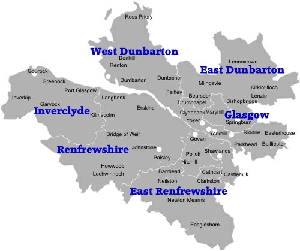

Population of Glasgow
Glasgow is home to 1,673,000 people, out of 5.4 million people in Scotland, as of 2019. These people live in many areas residing north and south of the River Clyde.
| Year | Population | Growth |
|---|---|---|
| 2020 | 1,673,000 | 0.36% |
| 2019 | 1,667,000 | 0.36% |
| 2018 | 1,661,000 | 0.36% |
| 2017 | 1,661,000 | 0.36% |
| 2016 | 1,655,000 | 0.30% |
| 2015 | 1,649,000 | 0.37% |
| 2014 | 1,644,000 | 0.37% |
| 2013 | 1,638,000 | 0.31% |
| 2012 | 1,632,000 | 0.37% |
| 2011 | 1,627,000 | 0.25% |
| 2010 | 1,621,000 | 0.25% |
| 2009 | 1,617,000 | 0.25% |
| 2008 | 1,617,000 | 0.25% |
| 2007 | 1,617,000 | 0.25% |
| 2006 | 1,617,000 | 0.25% |
| 2005 | 1,617,000 | 0.25% |
| 2004 | 1,617,000 | 0.25% |
| 2003 | 1,617,000 | 0.25% |
| 2002 | 1,617,000 | 0.25% |
| 2001 | 1,617,000 | 0.25% |
Areas of Glasgow
 Places north of the River Clyde Anderston, Anniesland, Auchenshuggle, Baillieston, Balornock, Barlanark, Barmulloch, Barrachnie, Barrowfield, Blackhill, Blairdardie, Blochairn, Botany, Braidfauld, Bridgeton, Broomhouse, Broomhill, Budhill, Cadder, Calton, Camlachie, Carmyle, Carntyne, Colston, Cowcaddens, Cowlairs, Craigend, Cranhill, Dalmarnock, Dennistoun, Dowanhill, Drumchapel, Easterhouse, Firhill, Gallowgate, Garnethill, Garrowhill, Garscadden, Garthamlock, Germiston, Gilshochill, Greenfield, Haghill, Hamiltonhill, High Possil, High Ruchill, Hillhead, Hogganfield, Hyndland, Jordanhill, Kelvinbridge, Kelvindale, Kelvingrove, Kelvinhaugh, Kelvinside, Knightswood, Lambhill, Lancefield, Lightburn, Lilybank, Maryhill, Maryhill Park, Merchant City, Millerston, Milton, Mount Vernon, Netherton, Newbank, North Kelvinside, Park District, Parkhead, Parkhouse G22, Partick, Partickhill, Port Dundas, Possilpark, Provanhall, Provanmill, Queenslie, Riddrie, Robroyston, Royston, Ruchazie, Ruchill, Sandyford, Sandyhills, Scotstoun, Scotstounhill, Shettleston, Sighthill, Springboig, Springburn, Springhill, Stobcross, Stobhill, Summerston, Swinton, Temple, Tollcross, Townhead, Wellhouse, Whiteinch, Woodlands, Woodside, Yoker, Yorkhill.
Places South of the River Clyde Arden, Auldhouse, Battlefield, Bellahouston, Berryknowes, Cardonald, Carmunnock, Carnwadric, Castlemilk, Cathcart, Cessnock, Corkerhill, Cowglen, Craigton, Croftfoot, Crookston, Crosshill, Crossmyloof, Darnley, Deaconsbank, Drumoyne, Dumbreck, Eastwood, Eden, Fairfield, Govan, Govanhill, Gorbals, Greenhead, Haggbowse, Halfway, Hazelwood, Henderston, Hillington, Hillpark, Househillwood, Hurlet, Hutchesontown, Ibrox, Jenny Lind, Kennishead, King's Park, Kingston, Kinning Park, Langlands, Langshot, Langside, Laurieston, Linthouse, Mansewood, Mavisbank, Merrylee, Moorepark, Mosspark, Mount Florida, Muirend, Newlands, Nitshill, Oatlands, Parkhouse G53, Pollok, Pollokshaws, Pollokshields, Polmadie, Port Eglinton, Priesthill, Queen's Park, Rosshall, Roughmussel, Shawlands, Shawmoss, Shieldhall, Simshill, South Nitshill, Soho, Southpark Village, Strathbungo, Summertown, Terminus, Toryglen, Tradeston, Wearieston.